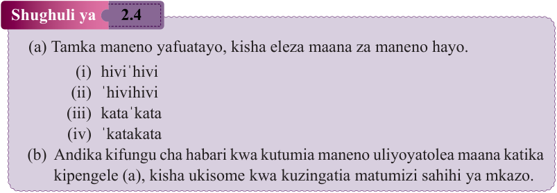

inayohusika, kwa mfano, sawasa'wa. Katika usemaji, mkazo huweza kuwa na dhima ya kubainisha maana ya neno. Mbali na matumizi haya ya kawaida, mkazo pia hutumiwa kusisitiza jambo katika sentensi kwa kutamka neno linalosisitizwa kwa nguvu zaidi. Ni muhimu kutumia mkazo ipasavyo kwa sababu matumizi mabaya ya mkazo huweza kusababisha matamshi yasiyo sahihi au kubadili kabisa maana ya neno.
Shughuli ya
2.4

Kuandika hadithi kwa kuzingatia uhusiano sahihi wa maneno katika sentensi

Soma habari kuhusu ‘Bidii ya Faji’, kisha jibu maswali yanayofuata.
Mwalimu Utete alipomaliza kufundisha Somo la Kiswahili alitoa zoezi na kumtaka kila mwanafunzi akajifunze namna maneno yanavyopangiliwa na kuhusiana katika kujenga sentensi zenye maana. Faji alikuwa mwanafunzi mmojawapo katika darasa hilo. Faji alikuwa na bidii sana katika kujifunza na alihakikisha kila wakati anaweka juhudi katika masomo yake.
Kila siku baada ya saa za shule, Faji alikuwa na kawaida ya kwenda kwa shangazi yake, aliyeitwa Juhudi, ambaye alikuwa mfugaji na mtaalamu wa lugha. Siku hiyo Faji alipokuwa akitoka shuleni, alikumbuka kuwa shangazi yake ni mtaalamu wa lugha. Alijisemea moyoni, “Nikifika tu nitamwomba shangazi anifundishe namna maneno yanavyopangiliwa na kuhusiana katika kujenga sentensi.” Baada ya Faji kufika kwa shangazi yake, alimsalimu na kumuuliza, “Shangazi, ni kwa namna gani maneno huhusiana na kufuatana mpaka tunakuwa na sentensi zenye maana?”
Juhudi alitabasamu na kumwambia, “Kabla ya kujua uhusiano, ni maneno gani unayoyafamu?” Faji alimjibu shangazi yake kwa kusema, “Shangazi, ninajua maneno yanayotaja majina ya watu na mimea, maneno yanayotoa taarifa kuhusu majina, maneno yanayoeleza namna tendo lilivyofanyika na maneno yanayoeleza mahali tendo lilipofanyikia.” “Vizuri sana Faji,” Juhudi alijibu. Kwanza, unatakiwa ujue kuwa maneno yote tunayotumia yamegawanyika katika makundi. Ninaomba usikilize